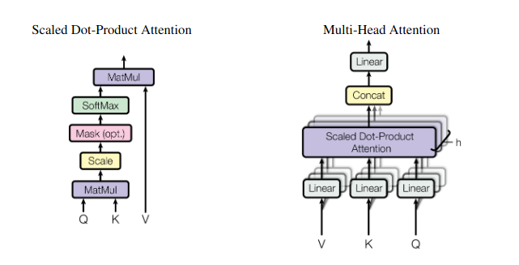
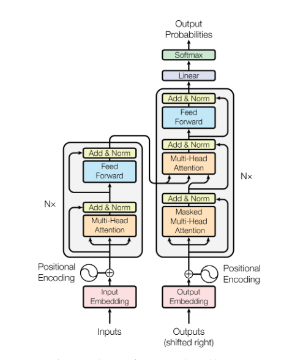

Summary
This paper was groundbreaking, introducing the Transformer model, which replaced the Recurrent Neural Network and Convolutional Neural Network.
Scaled Dot-Product Attention/Self Attention
We seperate the input tokens into three matrices: the query matrix (Q) which represents the element we want to focus on, the key matrix (K) which is every other word, and the values matrix (V) which is the positional encoding. All also come with weights and biases, which are randomly initialized and then trained for the ensemble of scaled dot-product attention sub-models. That means each different layer outputs different results. The V matrix is determined by using dot product to multiply the query and key and determine similarity, aka attention weight. Softmax is used to make these attention weights probabilities, which then shows the relevance of each key-value pair. Then, you take the weighted sum, to show how much each word is worth. This is different from recurrent neural networks which can keep the individual pairs for better comparisons, but the model makes up for it with multi head attention. In practice, all different query tokens are calculated at once in parallel. In the original model 8 attention heads were used with a 64 token length of each matrix.
Multi-Head Attention
You take the scaled dot product many different times with the different layers of random weights, and then take the sum of all those. This results in a kind of ensemble of attention, allowing the model to be good with context since it sees the relational patterns. 
Feed Forward Layer
Each feed forward layer consists of two linear transformations with a ReLU in between. They use different parameters for each one, which is like two convolutions with kernel size 1.
Encoder
Take the input embeddings (the words converted to a list of tokens) and pass it through a multi head attention layer. Then pass it through a feed forward network layer. That output is put through a residual connection. A residual connection adds the output of the layer to the original input to that layer (shown in the diagram below), which fixes the vanishing gradient problem. The gradients would get incredibly small, but you are instead passing in the original information throughout all of the layers. There are 6 sub layers total in this example. That new output is normalized.

Decoder
Also 6 sub layers. After the first multi-head attention layer, it uses another multi-head attention layer instead of a feed-forward layer. For each attention layer, Q comes from the previous decoder layer, K and V come from the encoder’s output. To prevent it from generating new positions, since this is decoding, we need to have it attend to positions that are known. We use two things for this, masking and offsettings. Masking sets the attention scores to negative infinity for positions that correspond to tokens that haven’t been generated yet, so the softmax barely sees them. Offsetting just gives it the tokens before the one it is trying to generate, resulting in the embeddings being offset by one position compared to the input. Now it does the same residual + normalize, then passes it to a feed-forward layer.
Takeaway
AI seems like very clever ways to get SGD to work, that’s basically it. Collaborative filtering is like that, transformers are like that, convolutions, etc. There might be other unexplored AI paths I could discover as well!
Other research
They mentioned label smoothing which I don’t really get, and I need to keep reading papers on Transformer’s because I DO NOT understand them at all even after hours. # I will at some point attempt to implement this, using Andrej Karpathy’s YouTube video on it, but for now I will just leave this here saying it sounds complicated!